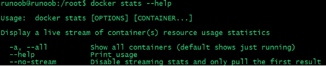
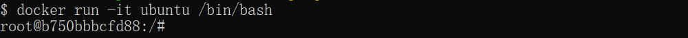
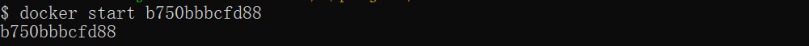
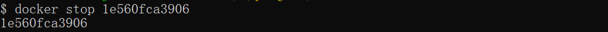
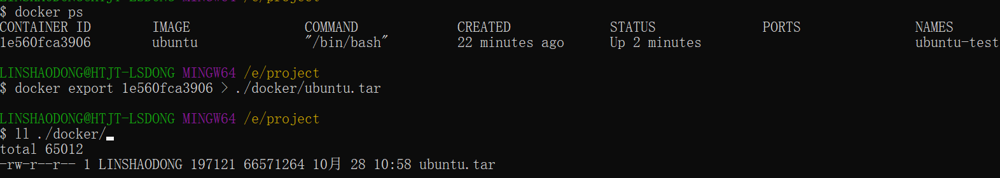
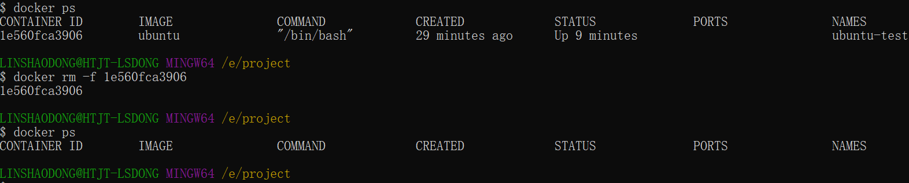
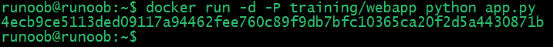

Docker container usage
A Docker container is a lightweight, portable, self-contained software environment used to run applications.
Docker containers package the application and all its dependencies, including libraries, configuration files, system tools, etc., into a standardized package, allowing the application to run consistently anywhere.
Containers are operating system-level virtualization. They do not need to run a full operating system, making startup and operation more efficient.
The relationship between images and containers
- Image：A static template for containers, containing all dependencies and files required for the application to run. Images are immutable.
- Container：A running instance of an image, with its own file system, processes, network, etc., and it is dynamic. A container starts from an image and remains mutable during runtime.

Docker client
Docker client is a command-line tool that interacts with the Docker daemon.
The docker client is very simple; we can directly enter the docker command to see all command options of the Docker client.
example@example:~# docker

You can use the commanddocker command --helpTo gain a deeper understanding of how to use a specified Docker command.
For example, if we want to viewdocker statsDetailed usage of the commands:
example@example:~# docker stats --help

The following are common Docker client commands:
| Command | Features | Example |
|---|---|---|
docker run | Start a new container and run a command | docker run -d ubuntu |
docker ps | List currently running containers | docker ps |
docker ps -a | List all containers (including stopped containers) | docker ps -a |
docker build | Use a Dockerfile to build the image. | docker build -t my-image . |
docker images | List all images stored locally | docker images |
docker pull | Pull an image from a Docker registry | docker pull ubuntu |
docker push | Push an image to a Docker registry | docker push my-image |
docker exec | Execute a command in a running container | docker exec -it container_name bash |
docker stop | Stop one or more containers | docker stop container_name |
docker start | Start stopped containers | docker start container_name |
docker restart | Restart a container | docker restart container_name |
docker rm | Remove one or more containers | docker rm container_name |
docker rmi | Remove one or more images | docker rmi my-image |
docker logs | View container logs | docker logs container_name |
docker inspect | Get detailed information about a container or image | docker inspect container_name |
docker exec -it | Enter the interactive terminal of a container | docker exec -it container_name /bin/bash |
docker network ls | List all Docker networks | docker network ls |
docker volume ls | List all Docker volumes | docker volume ls |
docker-compose up | Start a multi-container application (fromdocker-compose.ymlfile) | docker-compose up |
docker-compose down | Stop and remove the container created bydocker-composethe containers, networks, etc. that are started | docker-compose down |
docker info | Display detailed information about the Docker system | docker info |
docker version | Display version information for the Docker client and daemon | docker version |
docker stats | Display real-time resource usage of containers | docker stats |
docker login | Log in to the Docker registry | docker login |
docker logout | Log out of the Docker registry | docker logout |
Common option descriptions:
-d: Run the container in the background, for exampledocker run -d ubuntu。-it: Run the container in an interactive terminal, for exampledocker exec -it container_name bash。-t：Assign a tag to an image, for exampledocker build -t my-image .。
Container Usage
Get Image
If we do not have the ubuntu image locally, we can use the docker pull command to load the ubuntu image:
$ docker pull ubuntu
Start Container
The following command starts a container using the ubuntu image, with the parameter to enter the container in command-line mode:
$ docker run -it ubuntu /bin/bash

Parameter description:
- -i：Interactive operation.
- -t: Terminal.
- ubuntu: ubuntu image.
- /bin/bash: The part after the image name is the command. Here we want an interactive Shell, so we use /bin/bash.
To exit the terminal, simply typeexit:
root@ed09e4490c57:/# exit

Start a stopped container
The commands for viewing all containers are as follows:
$ docker ps -a
Click the image to view a larger version:
Use docker start to start a stopped container:
$ docker start b750bbbcfd88

Run in Background
In most scenarios, we want the Docker service to run in the background. We can-dSpecify the container's running mode.
$ docker run -itd --name ubuntu-test ubuntu /bin/bash
Click the image to view a larger version:
Note:added-dThe parameter does not enter the container by default; to enter the container, you need to use the command docker exec(This will be introduced below.)
Stop a container
The command to stop a container is as follows:
$ docker stop <容器 ID>

A stopped container can be restarted with docker restart:
$ docker restart <容器 ID>

Enter Container
When using-dWhen starting a container with the parameter, the container runs in the background. If you need to enter the container at this time, you can use the following command to enter:
-
docker attach: Allows you to interact with the container's standard input (stdin), output (stdout), and standard error (stderr).
-
docker exec：It is recommended to use the docker exec command, because this command will exit the container terminal but will not stop the container.
attach command
Example of using the docker attach command:
$ docker attach 1e560fca3906
Note:If you exit from this container, it will cause the container to stop.
exec command
Example of using the docker exec command:
docker exec -it 243c32535da7 /bin/bash

Note:If you exit from this container, the container will not stop, which is why it is recommended that everyone usedocker exec。
For more parameter instructions, please usedocker exec --helpView with the command.
Export and import containers
Export Container
If you want to export a local container, you can usedocker exportcommand.
$ docker export 1e560fca3906 > ubuntu.tar
Export the snapshot of container 1e560fca3906 to a local file ubuntu.tar.

This will export a snapshot of the container to a local file.
Import a container snapshot
You can use docker import to import a container snapshot file as an image again. The following example imports the snapshot file ubuntu.tar into the image test/ubuntu:v1:
$ cat docker/ubuntu.tar | docker import - test/ubuntu:v1

In addition, you can also import by specifying a URL or a directory, for example:
$ docker import http://example.com/exampleimage.tgz example/imagerepo
Delete Container
To delete a container, usedocker rmCommand:
$ docker rm -f 1e560fca3906

The following command can clean up all containers in a terminated state.
$ docker container prune
Run a web application
The containers we ran earlier did not have any particular purpose.
Next, let's try to use Docker to build a web application.
We will run a Python Flask application inside a Docker container to run a web application.
example@example:~# docker pull training/webapp # 载入镜像 example@example:~# docker run -d -P training/webapp python app.py

Parameter description:
-
-d:Run the container in the background.
-
-P:Map the network ports used inside the container randomly to the host we are using.
View the web application container
Use docker ps to view the containers we are running:
example@example:~# docker ps CONTAINER ID IMAGE COMMAND ... PORTS d3d5e39ed9d3 training/webapp "python app.py" ... 0.0.0.0:32769->5000/tcp
Here we have additional port information.
PORTS 0.0.0.0:32769->5000/tcp
Docker opened port 5000 (the default Python Flask port) and mapped it to host port 32769.
At this point, we can access the WEB application through a browser.

We can also use the -p parameter to set different ports:
example@example:~$ docker run -d -p 5000:5000 training/webapp python app.py
docker psView running containers
example@example:~# docker ps CONTAINER ID IMAGE PORTS NAMES bf08b7f2cd89 training/webapp ... 0.0.0.0:5000->5000/tcp wizardly_chandrasekhar d3d5e39ed9d3 training/webapp ... 0.0.0.0:32769->5000/tcp xenodochial_hoov
The container's internal port 5000 is mapped to port 5000 on our local host.
Network port shortcut
Throughdocker psThe command can view the container's port mappings.dockerIt also provides another shortcutdocker port, usedocker portYou can view the host port to which a specific port of a specified container (by ID or name) is mapped.
The web application container we created above has the IDbf08b7f2cd89namedwizardly_chandrasekhar。
I can usedocker port bf08b7f2cd89ordocker port wizardly_chandrasekharto view the container port mapping status.
example@example:~$ docker port bf08b7f2cd89 5000/tcp -> 0.0.0.0:5000
example@example:~$ docker port wizardly_chandrasekhar 5000/tcp -> 0.0.0.0:5000
View the web application logs
docker logs [ID or name] can view the standard output from inside the container.
example@example:~$ docker logs -f bf08b7f2cd89 * Running on http://0.0.0.0:5000/ (Press CTRL+C to quit) 192.168.239.1 - - [09/May/2016 16:30:37] "GET / HTTP/1.1" 200 - 192.168.239.1 - - [09/May/2016 16:30:37] "GET /favicon.ico HTTP/1.1" 404 -
-f:Letdocker logslike usingtail -fSimilarly, it outputs the standard output from inside the container.
From the above, we can see that the application uses port 5000 and can view the application's access logs.
View the processes of the web application container
We can also use docker top to view the processes running inside the container
example@example:~$ docker top wizardly_chandrasekhar UID PID PPID ... TIME CMD root 23245 23228 ... 00:00:00 python app.py
Inspect the web application
Usagedocker inspectTo view Docker's underlying information. It returns a JSON file that records the configuration and status information of the Docker container.
example@example:~$ docker inspect wizardly_chandrasekhar
[
{
"Id": "bf08b7f2cd897b5964943134aa6d373e355c286db9b9885b1f60b6e8f82b2b85",
"Created": "2018-09-17T01:41:26.174228707Z",
"Path": "python",
"Args": [
"app.py"
],
"State": {
"Status": "running",
"Running": true,
"Paused": false,
"Restarting": false,
"OOMKilled": false,
"Dead": false,
"Pid": 23245,
"ExitCode": 0,
"Error": "",
"StartedAt": "2018-09-17T01:41:26.494185806Z",
"FinishedAt": "0001-01-01T00:00:00Z"
},
......
Stop the web application container
example@example:~$ docker stop wizardly_chandrasekhar wizardly_chandrasekhar
Restart the web application container
For a container that has already stopped, we can use the command docker start to start it.
example@example:~$ docker start wizardly_chandrasekhar wizardly_chandrasekhar
docker ps -l queries the container created last time:
# docker ps -l CONTAINER ID IMAGE PORTS NAMES bf08b7f2cd89 training/webapp ... 0.0.0.0:5000->5000/tcp wizardly_chandrasekhar
For running containers, we can usedocker restartthe command to restart.
Remove the web application container
We can use the docker rm command to delete unnecessary containers.
example@example:~$ docker rm wizardly_chandrasekhar wizardly_chandrasekhar
When deleting a container, the container must be in a stopped state, otherwise the following error will be reported.
example@example:~$ docker rm wizardly_chandrasekhar Error response from daemon: You cannot remove a running container bf08b7f2cd897b5964943134aa6d373e355c286db9b9885b1f60b6e8f82b2b85. Stop the container before attempting removal or force removeother extensions